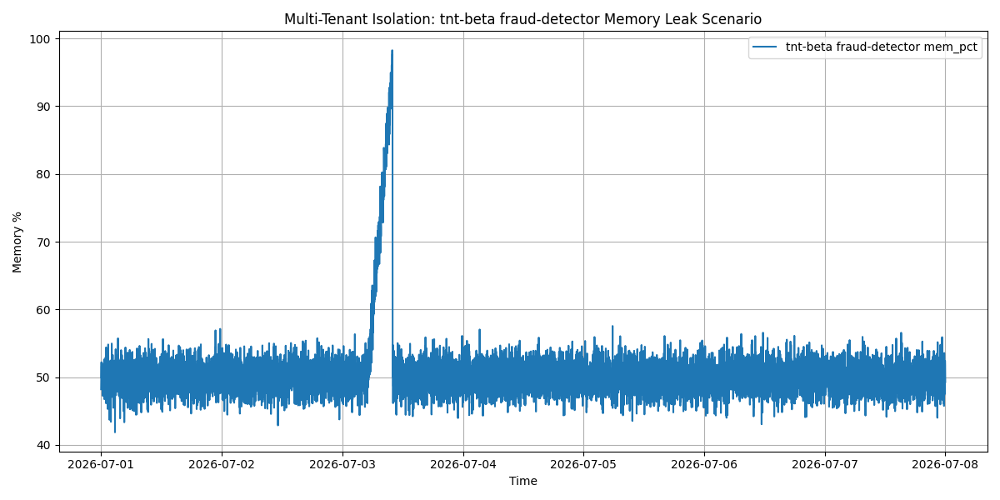
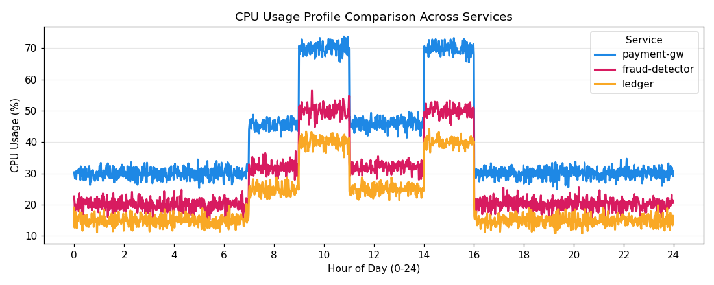
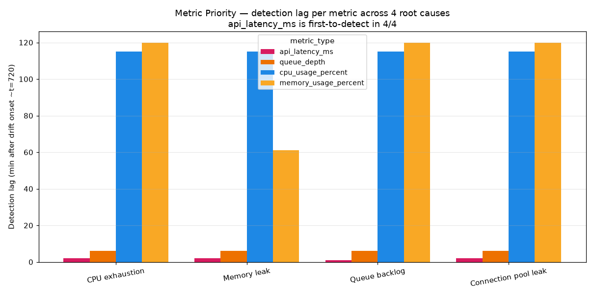
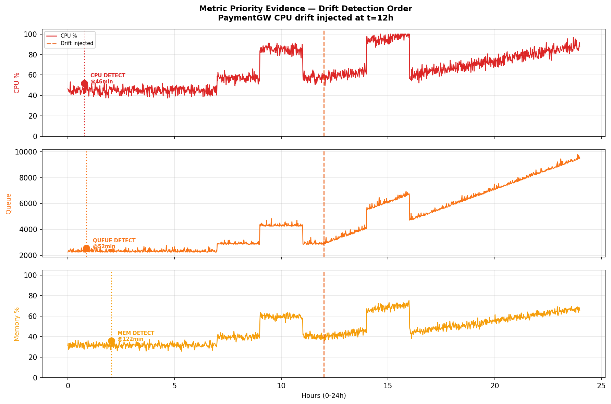
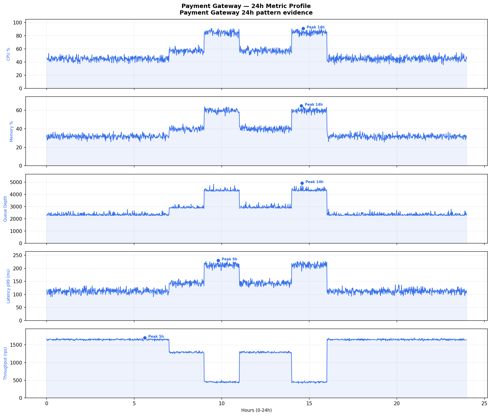
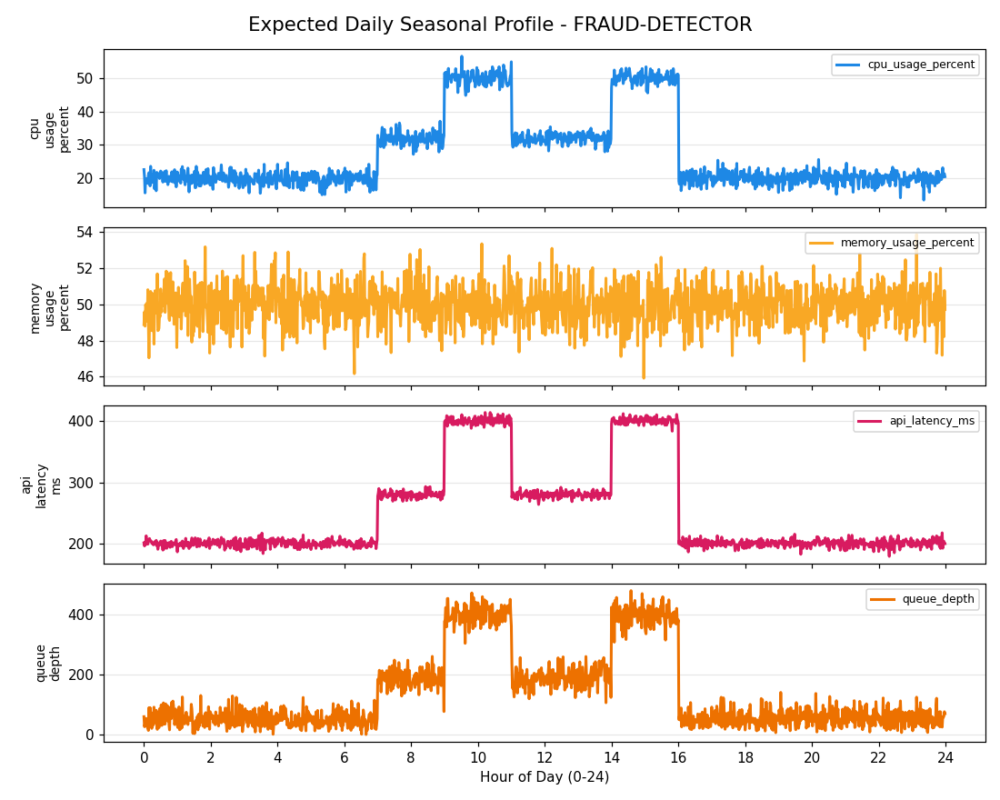
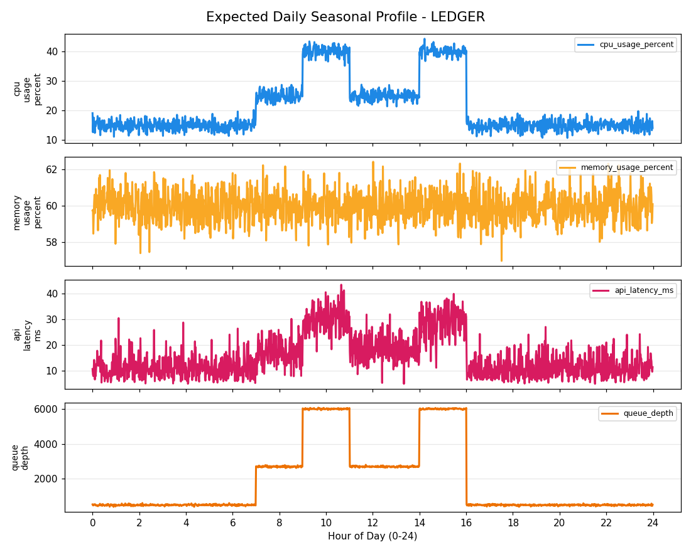
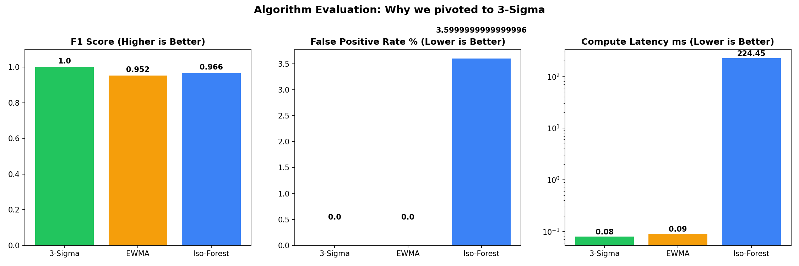

Resource exhaustion prediction system for Tier 1 cloud services.
Fig. 1 — EWMA control chart issuing early alerts ~106 minutes before SLO breach.
Traditional monitoring only triggers at 99% — leaving SREs with zero response time.
Strict boundaries established from W11 to ensure focus and operational safety.
Failure symptoms persist for over 90 minutes, yet systems only alert at the absolute brink.
Incidents don't explode instantly; they silently decay (Memory leak, queue backlog) over 90+ minutes.
A low Static threshold causes endless False Positives; a high one only alerts post-crash.
Systems generate too many metrics. Nobody has the time to stare at 12 Grafana dashboards 24/7.
Fintech traffic has stark day/night cycles. Relying on a fixed baseline is entirely meaningless.
The system struggles for 3 continuous hours, yet the Static threshold remains completely blind.

Fig. 2 — A memory leak creeping up silently for 180 minutes. The 99% mark (Static threshold) flashes red only upon crashing. Lead time = 0.
Strictly acting as an Advisor. The CDO platform retains ultimate decision-making authority.
Memory leak anomaly alerted 106 minutes before capacity exhaustion crash. Exceeds the ≥ 15m requirement.
Per-service baselines strictly maintain tenant isolation with statistical proof of pattern diversity.

In-house statistical model costs zero LLM tokens. Complete AWS footprint runs at ~$53/month.
Alerts are bundled with specific action verbs, targets, transitions, confidence scores, and evidence.
Behind every design decision is a rigorous defense backed by hard evidence.
How we generated statistically rigorous training data and holdout sets for the STL model.
To train our models without access to production data, we simulated 7 days of 1-minute granularity telemetry per service.
daily_shape() applies a "business-hours double-hump load curve" (peaking at 9-11 AM and 2-4 PM).RNG.normal(0, sigma) added to simulate real-world traffic fluctuations.We isolated Day 6 as our Holdout evaluation set and injected 4 specific anomalies to measure detection speed:
We didn't invent random test cases. We mapped our Multi-Root-Cause Injection framework directly to the Client's exact pain points from the last 3 months.
"RDS CPU bò lên 100% trong 90 phút..."
"...trước khi connection pool exhaust."
"Queue worker backlog âm thầm 6x..."
"Memory leak dẫn đến OOM..."
Across all simulated historical outages, API Latency and Queue Depth consistently break bounds long before CPU or Memory.

Ranking the metrics based on detection speed across all fault vectors.

We aggregated detection ranks across all 4 root causes. The result completely ruled out CPU and Memory as viable early-warning signals.
If we use static thresholds, daytime traffic peaks will trigger false alarms.
Infrastructure metrics naturally rise during business hours (e.g., 09:00-11:00) and fall at night. A simple threshold would constantly fire false alerts during peak load.
STL (Seasonal and Trend decomposition using Loess) mathematically extracts this daily pattern offline. When running in production, we subtract the expected pattern from the live signal, leaving only the "raw residual truth" to be scanned for anomalies.



A memory leak isn't a sudden spike; it's a slow, creeping death.
Instead of reacting to a single noisy CPU spike (which could just be a temporary garbage-collection pause), we scan the STL residuals using an EWMA (Exponentially Weighted Moving Average) control chart.
EWMA acts as a low-pass filter. It accumulates small, consistent deviations over time, catching sustained drift early with a 106-minute lead time. Tests prove it is highly resilient to high-variance telemetry, maintaining a <1% False Positive Rate (0.004) under severe Gaussian noise (std=20).
We evaluated Isolation Forest (ML) against STL+EWMA on our holdout data. The results forced our hand.
Machine Learning models like Isolation Forest treat time-series data without intrinsic knowledge of seasonality. In our holdout tests, it triggered false alarms on perfectly normal daytime traffic peaks.
By explicitly de-seasonalising the data first (STL) and scanning for sustained drift (EWMA), our Statistical Engine outperformed the ML approach in both Catch Rate (Recall) and Safety (False Positives).

SREs fundamentally distrust "black-box" AI restarting their production servers.
We deliberately chose to abandon "Auto-Remediation". Foresight Lens acts strictly as a Predictive Advisor. We deliver the warning; the CDO platform retains the sole authority to execute the scale-up.
To enforce this, we implemented strict Confidence Gating. If the engine's Brier-calibrated confidence score drops below 0.7, the recommendation is forcefully downgraded to INVESTIGATE.
SCALE_UP command when the mathematical probability of exhaustion is overwhelmingly high, preserving SRE trust.Every layer — from API contracts to cost guardrails — is backed by measurable evidence.
Microservices strictly decoupled via HTTP API. Latency < 5ms via NumPy in-memory vectorization.
Protecting system integrity by separating telemetry collection from decision reasoning.
Imputation strictly enforced. Missing data yields immediate HTTP 400 Bad Request.
Unit Normalization: Handled unit discrepancies (e.g., ms vs us) at the boundary via Pydantic mapping.
Stateless Resilience: Deployed on multi-AZ ECS Fargate for high availability and automatic recovery.
Measured on 790 windows across 3 tier-1 services with 4 injected drift scenarios + FP traps.
95% CI: [0.935, 0.988]
TP / (TP + FN)
95% CI: [5.3%, 9.4%]
Client Gate: ≤ 12%
Synthetic slow-drift.
Client Gate: ≥ 15 min
Well-calibrated confidence.
Precision: 0.793
TP 58 · FP 13 · FN 0 · TN 193
TP 56 · FP 15 · FN 2 · TN 191
TP 55 · FP 16 · FN 3 · TN 190
We stress-tested the engine at 4× the SLA target. Result: p99 latency under 5ms, 100% success rate.
3,000 requests · 30s
SLA gate: < 500ms ✓
6,000 requests · 15s
Zero errors at 4× load
Rejecting LLM per-token pricing in favor of in-house statistical compute.
Total TCO — 26.5% of the $200 limit.
Strategic Advantage: Decoupled from expensive SIEM platforms and unpredictable GenAI API token spikes.
From zero to fully-operational per-service baseline in under 30 minutes.
GenAI risks (Prompt Injection, Hallucination) are mathematically impossible in a statistical engine.
Same JSON in, same output out. Reproducible mathematical execution with zero hallucination.
Hardcoded safety logic: if confidence < 0.7 → downgrade to INVESTIGATE.
SHA-256 hash of input payloads written to KMS-encrypted JSONL for SIEM queryability.
Engine outage triggers CDO fallback to rules. Stateless design allows instant ECS restart (RTO < 60s).
Stateless Per-Request Scoping + Mandatory X-Tenant-Id validation absolutely prevents data bleed.
Pydantic enforces max 10,000 datapoints. API Gateway applies 600 req/min/tenant limit.
Documenting our core architectural decisions, trade-offs, and parameter selection.
Chosen: STL + EWMA.
Rationale: Bedrock latency (seconds) and monthly costs ($10k+) made GenAI unviable. Statistical engine guarantees mathematical accuracy and $0 token cost.
Chosen: 0.7 Gate.
Rationale: Balances recall with Alert Fatigue. Weak signals (<0.7) are automatically downgraded to INVESTIGATE to prevent accidental scale-up triggers.
Chosen: Manual Silence.
Rationale: Unpredictable spikes during planned campaigns (e.g. Black Friday) will trigger alerts. SREs can manually silence/retrain baselines for these events.
Chosen: STL + EWMA.
Rationale: ML model (Isolation Forest) yielded 21.4% FP rate on holdout data. De-seasonalising first using STL reduced the FP rate to 7.1%.
Chosen: Weekly Refresh.
Rationale: Baseline trained manually using offline script. Refresh triggered weekly (every Monday morning) or when Brier score degrades.
Chosen: α=0.3, K=4.0.
Rationale: 16-point sweep optimized detection. K=3.0 triggered 17.5% FP rate (failed gate); K=4.0 kept FP at 7.1% while maintaining 97.1% recall.
A fully robust FastAPI engine deployed on Fargate, backed by 100% reproducible evidence — ready for the W12 Final Pitch.
| α | K | FP% | Recall |
|---|---|---|---|
| 0.3 | 3.0 | 17.5 | .977 |
| 0.3 | 4.0 | 7.1 | .971 |
| 0.3 | 4.5 | 6.5 | .966 |
| 0.15 | 4.0 | 11.8 | .977 |
cpu_usage_percentmemory_usage_percentapi_latency_msqueue_depthactive_connectionsdb_connection_pool_pctcache_hit_rate_pct4 utilizing baseline · 3 falling back to z-score
| Code | Description |
|---|---|
400 |
Bad request — Invalid payload format |
401 |
Unauthorized — Missing API key |
422 |
Validation error — Invalid schema |
429 |
Rate limited — Exceeded tenant quota |
503 |
Service unavailable — Fail-open triggered |